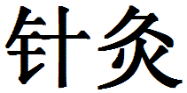

 (zhen jiu)
zhen jiu - acupuncture and moxibustion; to give or have acupuncture and moxibustion
From the Latin, acus - a needle, and pungere - to prick
What is Acupuncture?
- A healing practice originally from China
- Fine needles are inserted into the body at specific points for treating health problems
- Most commonly associated with Chinese (Oriental) medicine
How does Acupuncture work?
- Ancient Chinese discovered that Qi flows through meridians in the body
- Along those meridians are acupuncture points
- Qi can be accessed through those points
- Good health depends on the smooth and proper flow of Qi
- Acupuncture regulates the Qi flow
Western Biomedical View
- Acupuncture affects many systems in body
- Nervous
- Vascular
- Musculoskeletal
- The mechanisms by which acupuncture works are not yet fully understood by Western science
- Research is becoming more mainstream